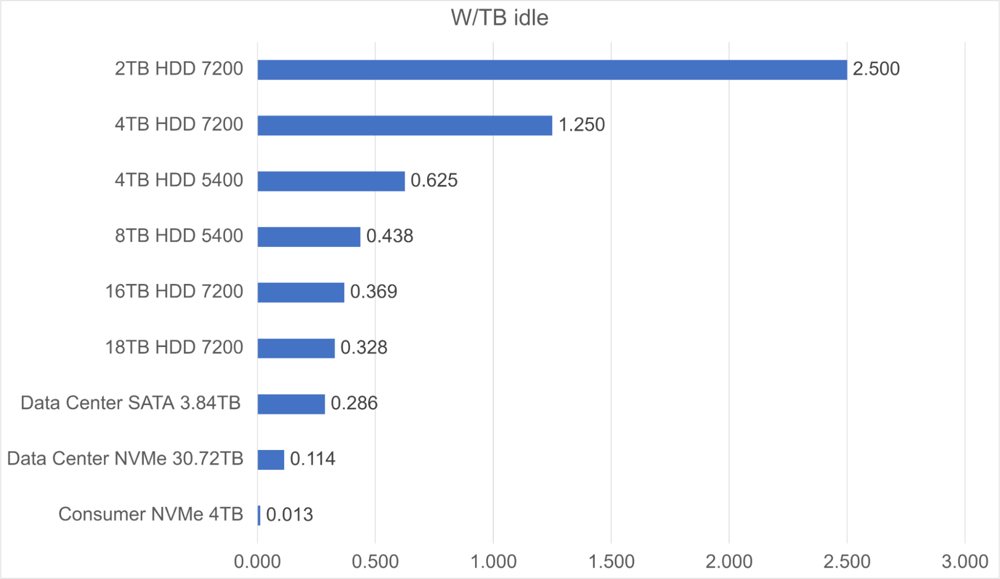

46390 kW is the average power consumption as of 7/6/2021, based on the current netspace of 30.1 EiB, as reported by Chiastatus.com.
Chia power is the model for estimating power consumption on the Chia network, written by Jonmichael Hands, head of storage at Chia and formerly Strategic Planner at Intel corporation. You can find him on Keybase as @Storage_jm
Chia is the solution to the "Proof of Work" energy problem
Rev 2.0 Changelog
- More than 3 months of observed Netspace growth and observations
- Initial growth (phase 1) of the Chia network was dominated by newly purchased high capacity 3.5in nearline HDDs, by early adopter farmers (Source: IDC, Seagate, WD). Avg capacity could be as high as 15TB
- Phase 2 of growth will be dominated by smaller farmers, pools, coming mostly from underutilized storage (Source: IDC)
- Include 6 & 8TB into low cap avg range for power consumption
- Integrate plotting power into energy consumption by assuming the life of a plot and amortizing the energy used to create it over the lifetime of the plot. Use real measured data and power consumption of chia community plotters to get a range for power consumption
- Add annual energy in TWh, compare vs BTC & ETH using digiconimist (cbeci still great but recent China policy changes not reflected in annual consumption avg)
This is a link to a working model (includes legacy calculations and estimates in other tabs)
The original model estimated Netspace growth based on the initial estimate, growth rate, and total storage market size for the upper limit of growth. The Chia team reviewed a very early version in a community Zoom call: Farming and Electricity Usage in Chia.
The Chiapower 2.0 model takes more than 3 months of observed Netspace growth, industry analyst reports, and first-hand reporting directly from the HDD vendors on the capacity mix and increased demand for HDDs attributed to Chia. The total power consumption on the Chia network can be estimated by taking the total Netspace (similar to hashing power in bitcoin) and modeling the power consumption of the storage devices (farming) and the energy consumed to create the data (plotting). This is a similar methodology to the Cambridge Bitcoin Electricity Consumption Index, where most likely mining hardware is known, and electricity cost is estimated, and the total power consumption of the bitcoin network is estimated using a low and high estimate of reference mining hardware. Estimating a mix of common reference hardware farmers using hard disk drives (HDDs) and solid state drives (SSDs) by what is economical for Chia farming will depend on the capital expenditures of the hardware (CapEx) and operational expenditures for power, cooling, networking, and data center efficiency. Storage power efficiency is measured in TB/W which includes the overhead of the supporting hardware infrastructure to host the storage devices, but the largest upfront cost in Chia farming is the cost of the storage devices themselves. The Chia network also consumes energy during the plotting process, wherein the cryptographic data is generated prior to being able to farm for the proof of space and time.
Energy consumption in kWh can be calculated by assuming an estimated percentage of the network using consumer hardware with spare capacity (underutilized resources already owned), which happen to be very efficient due to the transition in mainstream computing devices to SSDs over the last decade, as well as the percent of dedicated farmers that are using dense storage configurations with data center grade equipment.
Summary of equations


Where TB/W for the different segments are estimated with the representative farming equipment efficiency, summing the power of the storage with an estimate of power consumption in the Chia farming workload with the supporting infrastructure, dividing it by the total amount of usable terabytes (TB), with an overhead of the power usage effectiveness or efficiency. PUE (Power Usage Effectiveness) is estimated at 1.1, consistent with the best guess from CBECI to compare to Bitcoin

Total power of the Chia network

Annual energy consumption

Phase 1 growth of Chia was dominated by high capacity nearline HDDs, coming from both the retail channel and distributors in the enterprise space. The timing of the Chia first transactions was around 6 weeks after mainnet launch on March 19, 2021, the Bitcoin all-time high being in April 2021, a small number of coins in the market coming only from early farmers, and some early IOU trading led Chia to launch at a high price in the first few weeks of trading. This presented a large opportunity for early farmers while the Netspace and difficulty of the network was low causing a large amount of high-capacity new HDDs to be purchased to farm Chia. The average capacity estimates were above 14TB. Below is the estimate of shipments for the nearly 1ZB of nearline HDDs shipped in 2021 per Gartner, corroborating the reports in sales, HDD ASP (pricing), and reports directly from the HDD vendors.
Source: Gartner “Forecast: Hard Disk Drives, Worldwide, 2017-2024”We use a representative farming model, which we will go into detail, that includes equipment required to host dense storage deployments. This includes the rack, JBODs (storage array), cables, management servers, and supporting equipment. The power of the storage is still the dominant power utilization in Chia farming, but the supporting equipment needs to be modeled. The goal in Chia farming is to be as efficient as possible to reduce operational expenditures, so we assume farmers are indeed optimizing for cost and power.
| Parameter | Description | Unit | Source |
|---|---|---|---|
| Netspace | The total amount of farming capacity on the Chia network | EiB (Exbibyte) | Chia network, Chia explorer |
| Plotting energy consumption | Average energy consumption to create plots | kWh/TiB of data | Chia community reference hardware |
| Device power consumption | The idle power of the storage device | W/TB | Modeled by device type for SSD and HDD |
| Power high-cap | Take average capacity of nearline HDDs being used for Chia farming | Megawatt (MW) | Gartner, IDC, HDD vendors |
| Power low-cap | Using recycled or used HDDs | Megawatt (MW) | assume 5 years old, an average of 4-8TB |
| Power underutilized | Coming from consumers with underutilized storage capacity | Megawatt (MW) | IDC on Chia |
Modeling Device Power Consumption - W/TB
The power consumption used to estimate per disk power is very close to the hard drive specification of idle power. The Chia farming process is very lightweight, requiring very little disk io and further reduced in the new consensus through a mechanism called the plot filter. Although the amount of data transferred is very low, the frequency of data access depends on the size of the plots constructed and number of plots per drive (capacity per disk), measured with a K value, with the minimum K value = 32 consisting of ~108GB (~101GiB. Most farmers use the minimum required K value for the network operation due to the ease of plotting, so the probability a single plot per disk passes the filter is very high, requiring the disk to be accessed frequently.
Analysis has shown that during the Chia farming workload on an 18TB HDD with n=165 plots, the HDD was idle 99.7% of the time (Source: Western Digital)
Hard drives save power in a few ways. Consumer hard drives sometimes have a lower RPM (5400) vs enterprise or nearline HDDs (7200 rpm), which decreases power consumption from spinning the motor slower. When an HDD is idle for an extended period of time, the device can park the head. One cycle of this is called a load/unload. The actuators on the HDD are not active while the heads are parked and this can save a few W of power. These can be exactly the same disk, spec’d in two different ways! NAS HDD idle power = 3.6W Enterprise HDD idle power = 5.6W
To get to zero idle power, the drive must actually spin down. While it is technically possible for a hard disk drive to spin down to zero idle power between slots, the resume latency from HDD power off or spindown is 10 seconds and HDDs consume higher power to spin up (inrush current) reaching up to 25W for a few seconds. The energy consumed for power up and the mechanical wear and tear on the device make it not practical to spin down the drives in regular use. Power savings on the other mechanical aspects of HDDs, for instance, management of the heads and actuators, are device-specific, while link power states are subject to the host storage interface (both SAS and SATA have detailed power state machines that operate differently)
Because of the nature of the moving parts within the HDD, repeated movements and friction over hundreds of thousands of iterations can cause physical particles to be released within the hard drive, and increase the chance of physical damage on the disk. The current assessment is that despite a large amount of idle time on the disk and using standard k=32 plots, the disk is being accessed frequently enough (albeit a small amount of data actually being read) that parking the heads or spinning down would cause an accelerated amount of wear and tear on the drive that would be detrimental to the longevity and reliability of the HDD.

 Source: Feeding the Pelican: Using Archival Hard Drives for Cold Storage Racks
Source: Feeding the Pelican: Using Archival Hard Drives for Cold Storage Racks
Power consumption for large capacity
The majority of nearline and high capacity HDDs are consumed by hyperscale data centers and large cloud service providers, where designing around lowest possible data center TCO is the ultimate goal. TCO is measured in TCO$/TBe/rack/month, where TCO is the sum of the total capital and operational expenditures amortized of the effective or usable capacity of the storage system. The Chia power model utilizes a similar model assuming the most efficient way to store data is already widely being used. Optimizing disk storage TCO involves getting the highest capacity HDDs, which offer the highest energy efficiency in terms of TB/W, as well as densely packed JBODs (just a bunch of disks) measured in TB/rack unit. Different architectures for warm storage (more frequently accessed) vs cold storage (archival, less frequently accessed) vary mostly around the amount of compute to storage ratio. Chia farming looks very similar to hyperscale HDD archival storage requiring minimum compute resources and networking resources for the actual harvester and farming protocols. Hyperscalers like Facebook and Microsoft have written about their storage systems extensively because the JBOD hardware designs are open source at the Open Compute Project.
The model used to estimate power consumption for disks and supporting infrastructure is taken from the SNIA open source storage TCO model. Replication, erasure coding, and RAID for data protection is not assumed for use in the Chia farming model, due to the fact that plot data can be easily recreated upon disk failure. The model also assumes the majority of disk time is spent in active idle, where the motor is spinning and the disk can respond to commands in milliseconds. The total power consumption overhead for dense storage involves a storage server (or sometimes called headnode) that serves the operating system hosting the Chia harvester and/or farmer. The total power consumption must include the JBODs (which power consumption comes mostly from the disks, but some from the fans, SAS expanders, and backplane) and the servers and supporting infrastructures like networking routers and switches. Everything that is in the rack dedicated to Chia farming must be considered to accurately model the power consumption efficiency in TB/W. While Chia farms may not look exactly like a hyperscale rack, the goals are identical.
store the largest amount of data in the smallest amount of space with the lowest power
To achieve this goal, high-capacity HDDs must be used due to the large advantage of capacity per rack unit and physical space and power per TB.
Energy efficiency - Data center PUE
Hyperscalers like Facebook have achieved a world-class PUE of 1.08 and have a large effort in sustainability and renewable energy. We assume most large farmers in the first few years are not optimizing for maximum power efficiency, but just like in Bitcoin over time the power efficiency will gravitate towards the most efficient solutions for power consumption, low cost electricity, and energy efficiency. For this model, we have assumed a mid-range best guess estimate consistent with the CMECI methodology to ensure a consistent comparison. There will certainly be a large range of efficiencies with Chia farmers.
Power consumption low-cap
The power consumption in the Netspace coming from low capacity HDDs (the majority being in the 4-8TB range) consume higher power per TB than high capacity HDDs, but come at a lower acquisition cost. Hard disk drives also exhibit a bathtub curve for device failures when power on hours exceeds the 5-year warranty or excessive writes to the disk (HDD manufacturers call rated workload). The annual failure rate for these models that are well into production has been well documented, with reports like Backblaze HDD Disk Stats. Through research on hyperscale HDD recertified programs, most likely the failure rate over time increasing is being caused by increased use. The Chia workload is very lightweight, and read-only once the data is on the farming medium. This is expected to spur a large amount of interest in recertified or recycled hard drives for us in Chia farming. Chia is also not storing any user data, so the occasional bit error is not actually catastrophic for farming, it just effectively compromises a small number of proofs (of which there are many millions in a single plot file).
The power estimation for low-cap assumes a weighted average of 4TB, 6TB, and 8TB used in mainstream desktop farms, with relatively low overhead and the assumed best guess PUE of 1.1 above.
Power consumption for underutilized storage - Phase 2 growth
In June of 2021 IDC released the report on Chia, titled Chia Cryptocurrency Farming Is Real and Uses Lots of Storage. Bram Cohen, CEO and founder of Chia Network, had a hypothesis when he started Chia that there was a large amount of underutilized storage in the world, and this storage could be used to secure the network for the Chia blockchain using proof of space and time. IDC confirmed this hypothesis.
“IDC believes that consumer-owned DT PCs and PS devices equipped with HDDs do represent a nearterm addressable TAM for storing Chia plots. IDC's Global StorageSphere research indicates that, in CY21, approximately 195EB of available storage capacity exists in the installed base of consumer DT PCs, plus roughly 310EB of storage capacity is available in the installed base of HDD-based consumer PS devices.” Source: IDC Market Perspective - Chia Cryptocurrency Farming Is Real and Uses Lots of Storage
Important stats used for modeling the power use for underutilized storage Desktops - PCs using internal HDDs in desktops are only utilizing on average 30% of the hard drive. External HDDs - PCs with an external HDD attached are only utilizing on average 23% of the hard drive. These stats are used for the contribution of underutilized storage to the power consumption in the Chia netspace. The expectation is that with pooling, this storage becomes unlocked for the smaller farmers who wanted to participate in the network but would not have been earning frequent rewards with the large Netspace growth that occurred during Chia phase 1 growth. We expect a large amount of growth in phase 2 to be driven by underutilized storage space. While we will see accelerated HDD demand in response to a large increase of the price of XCH, the marginal cost of the people who already own storage to start farming Chia is very small. With the energy use to farm being very low, and pools being very accessible, this will create the perfect environment for smaller farmers with underutilized space to farm on the Chia network. In phase 2 growth we estimate a percentage of the network growth coming from underutilized storage based on the price and ROI for Chia farming. The current estimate does not reflect any hard prediction, just used for modeling purposes. We will observe over the next few months
SSDs and Chia farming
Solid-state drives are extremely power efficient. Designed for use in laptops and mobile devices for long battery life, NAND and SSD controllers are architected for near-zero idle power consumption. The NVM Express (NVMe) specification for solid-state drives contains various features for power savings, with mainstream consumer SSDs ranging from 2-4mW idle power with 5-8mS resume latency. With over 100 million consumer NVMe SSDs shipped alone in 2020, there are tens of millions of 1-2TB SSDs in consumer laptops and desktops, which based on studies done by Intel and other companies is greater than the average amount of data used in mainstream use, productivity, gaming, and workstations. The lower bound estimate is the power consumption for low power SSDs. With the analysis that was done on the Chia workload showing 99.7% idle time on HDDs, this may be 99.9 or 99.99% on SSDs due to the latency reduction. This means that one can effectively farm Chia with near-zero power consumption on consumer or power-optimized farming SSDs!
It is very possible that we will see some portion of the underutilized space come from SSDs in the coming years, or even dedicated farming optimized consumer SSDs. The average capacity SSD in the channel / retail space is now 1TB, while the capacity in laptops is still only 512GB. This means while 3D NAND capacity increases continue, the average user will have a considerable amount of storage in their laptop that is underutilized. Current prices of SSDs are 3-6x the $/TB of capacity-optimized hard disk drives. With the majority of the TCO in farming being the $/TB of the storage device, it is unlikely we will see dedicated Chia farming SSDs being used until the price gets to 2-3x that of HDD. With the amount of power savings that can be achieved with consumer SSDs in Chia, we expect a fair amount of innovation in this space in the coming years.
Power to plot
The plotting process involves the creation of the cryptographic data that is stored on the farming devices, and requires compute and ephemeral storage resources to create. Plotting is a one time energy consumption use per the total Netspace, as the data to be stored for farming only needs to be created once. More details about the plotting process can be found in the Chia Proof of Space Construction document. The Chia community has reference hardware posted with the amount of data that various machines can plot per day, and the average power consumption of the systems can be measured or estimated very accurately (since these are common consumer or server platforms). Users also record the amount of data they are able to plot per day per machine making it practical to estimate the energy consumption to create the Chia plots, estimated in kWh/TiB plotted. A k=32 plot is expected to live for at least a 5 year period, and thus the energy required to create the plot is amortized over the life of the plot. The total power consumed to plot the entire Netspace can be estimated using the range of reference hardware, then divided by the number of years for the average energy consumption contribution in the network coming from plotting. Although plotting systems consume real power to operate, the contribution to the total annual energy consumption is 20-30x lower than the actual power consumed by the storage devices for farming.
Opportunities for further investigation
HDD capacity growth vs QLC SSD
There is currently a lot of debate about what is in store for the next decade of storage devices. The NAND market is project to reach 558EB in 2021 (Source: TrendForce Feb. 9th, 2021), with approximately 300EB of SSDs between data center and consumer applications. With the current decline of average selling price of SSDs over the last 10 years, multiple generations of 3D NAND technology improvements and new media technologies for NAND flash (QLC and PLC, 4 and 5 bits per cell respectively) may bring a total ASP crossover for SSDs and HDDs. Even if SSDs reach within 2-3x the ASP, the projected TCO in almost every storage application will favor SSDs. Seagate has since responded with a competitive roadmap that exceeds the current areal density growth for HDDs and requires investment in new technologies.
“Seagate recently published its long-term technology roadmap revealing plans to produce ~50 TB hard drives by 2026 and 120+ TB HDDs after 2030. In the coming years, Seagate is set to leverage usage of heat-assisted magnetic recording (HAMR), adopt bit patterned media (BPM) in the long term, and to expand usage of multi-actuator technology (MAT) for high-capacity drives. This is all within the 3.5-inch form factor”.
No matter who wins this storage war, total power efficiency per given storage capacity will get reduced in upcoming years due to the competitive storage market and large growth of data created. These will both benefit Chia, with an SSD heavy future being even more power efficient than the current. Intel forecasted that a move to all SSD in the future could reduce carbon emissions by 41 million tons, with a projected TCO crossover for 15-30% of the nearline HDD bit TAM by 2022 alone.
Reduce power of HDDs through firmware optimizations for Chia
Current 5400RPM 3.5in HDDs consume less idle power than 7200 RPM drives. An 8TB Seagate 5400RPM HDD consumes 2.5W (4TB) and 3.4W (8TB) idle power, while competing 7200 RPM drives consume 5-6W idle power. There are likely optimizations to slightly reduce W/TB by taking large-capacity models and running them at a lower motor speed, impacting performance at the tradeoff of energy efficiency.
| Drive Model | Capacity | Speed | Idle Power | W/TB |
|---|---|---|---|---|
| Seagate Barracuda | 8TB | 5400 RPM | 3.4W | 0.425 |
| Seagate Exos X18 | 18TB | 7200 RPM | 5.3W | 0.294 |
Copyright © 2021 - chiapower.org
CHIA NETWORK INC, CHIA™, the CHIA BLOCKCHAIN™, the CHIA PROTOCOL™, CHIALISP™ and the “leaf Logo” (including the leaf logo alone when it refers to or indicates Chia), are trademarks or registered trademarks of Chia Network, Inc., a Delaware corporation, used under license.